S1 · Physiology · Summary
Synaptic transmission
- Essentials
- Classification
- Chemical synapse
- Properties
- Neurotransmitters
- Neuromuscular junction
- EPP & MEPP
- Acetylcholine
- Pharmacology
- EPSP / IPSP
- Integration
- Exam traps
- Self-check
If you remember only this
- Chemical synapse: a neurotransmitter crosses the cleft → unidirectional (pre → post), with a synaptic delay, fatigue, integration, not all-or-nothing. Electrical synapse: ionic current passes directly → bidirectional.
- Sequence: AP arrives → Ca²⁺ enters (voltage-gated Ca²⁺ channels) → exocytosis → NT binds its receptor → rapid inactivation by degradation, (presynaptic) reuptake or diffusion.
- NMJ = motor neuron α axon + skeletal muscle fiber (motor endplate); cleft 50–100 nm; nicotinic ACh receptors on the crests of the folds.
- EPP = local depolarization of the postsynaptic (muscle) membrane, isolated with curare or TTX (blocks Na⁺ channels); max in 2 ms, back to 0 in 20 ms; due to ↑ gNa⁺ and gK⁺ → about −15 mV. MEPP = spontaneous 0.5 mV = one quantum of ACh.
- ACh: made from acetyl-CoA + choline by choline acetyltransferase; released by Ca²⁺ via synaptotagmin + SNAREs; destroyed by acetylcholinesterase into choline + acetate; choline is recaptured.
- Nicotinic receptor: 5 subunits (2α, β, γ, δ); 2 ACh open the cation channel (Na⁺, K⁺).
- EPSP (depolarization, ↑gNa⁺ + gK⁺) and IPSP (hyperpolarization, Cl⁻ in / K⁺ out) are local, gradable, summable, decremental, no refractory period, not all-or-nothing.
I. Introduction p. 3
- The term synapse was proposed by Sherrington for areas of contiguity between neurons, specialized in transmitting information.
- Synapses are not only inter-neuronal: they also connect neurons to effector cells (muscle, gland) = neuro-effector synapses.
- The transfer of information from one cell to another at these contacts = synaptic transmission.
II. Classification of synapses p. 4–13 2022-23
1. By operating mode p. 5–8 2022-23
| Chemical synapse | Electrical synapse | |
|---|---|---|
| Signal | A neurotransmitter released by the presynaptic fiber binds postsynaptic receptors and modifies its excitability | Purely electrical: membrane potential changes pass directly to the next neuron (ions through the gap-junction channels) |
| Direction | One-way: presynaptic → postsynaptic | Bidirectional |
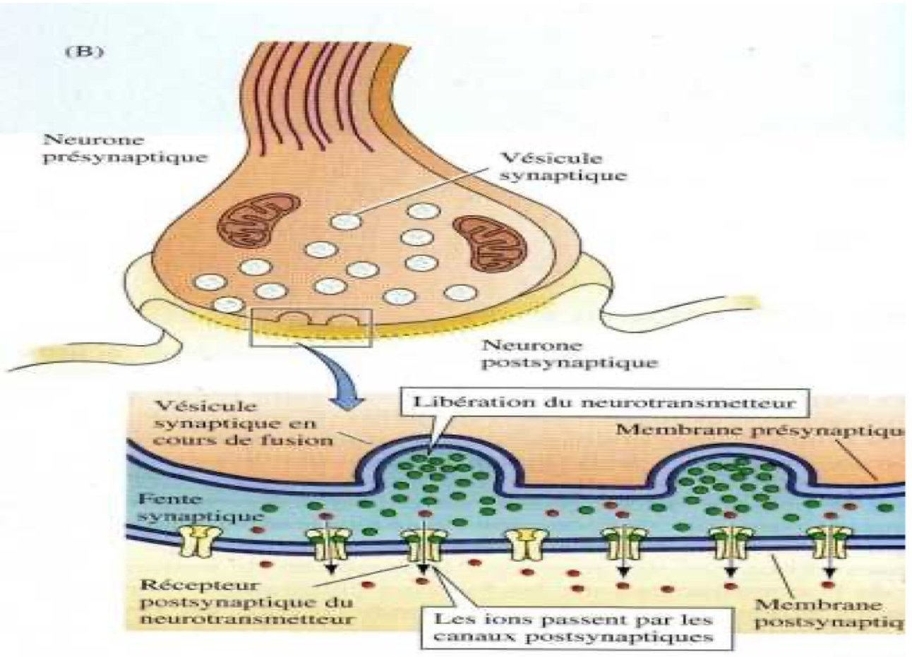
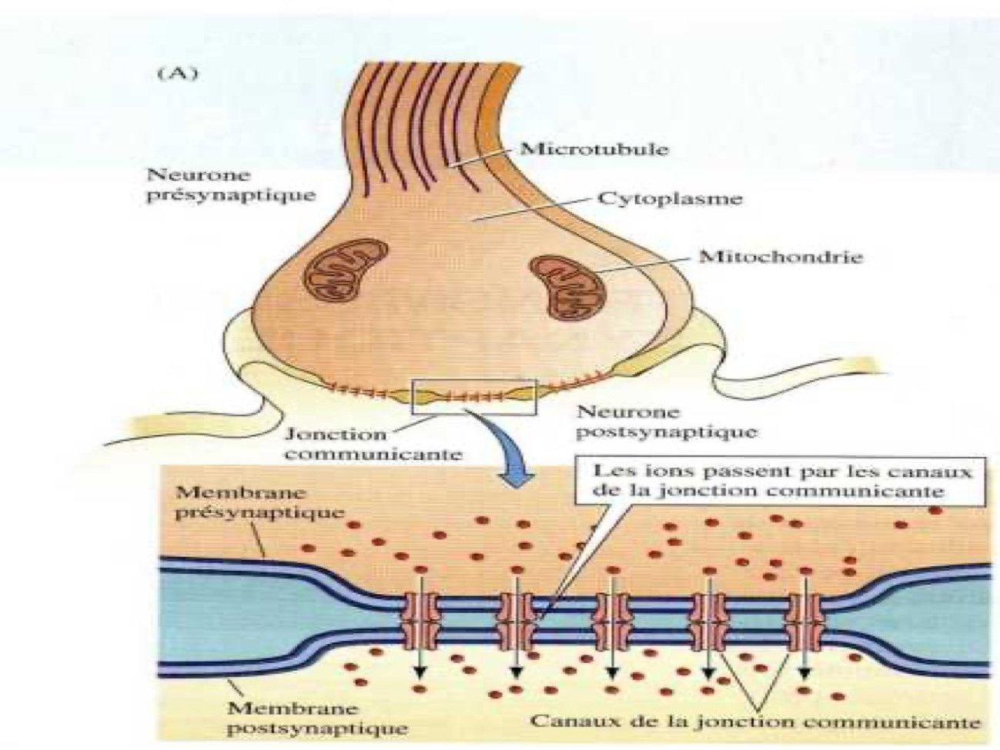
2. By the postsynaptic element p. 9–11
- Neuro-neuronal: postsynaptic element = a nerve membrane → axo-somatic, axo-dendritic, axo-axonic.
- Neuro-effector: postsynaptic element = an effector cell → striated skeletal or cardiac muscle, smooth muscle, gland.
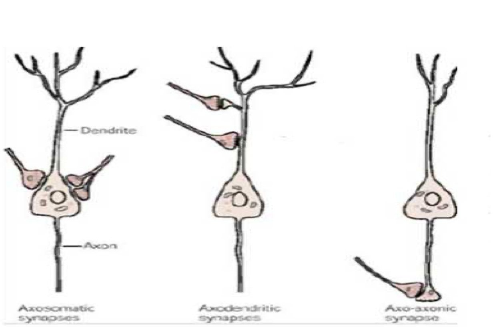
3. By the effect on the postsynaptic membrane p. 12
- Excitatory: activating the presynaptic element → depolarization of the postsynaptic membrane.
- Inhibitory: → hyperpolarization.
4. By the chemical mediator p. 13
Cholinergic (acetylcholine), glutamatergic (glutamate), GABAergic (GABA = gamma-aminobutyric acid), dopaminergic (dopamine), peptidergic (peptides)…
III. Structure and operation of a chemical synapse p. 14–15 2022-23 · 2023-24 · 2024-25
The synaptic complex has 3 parts:
- a presynaptic element — always a nerve cell;
- a postsynaptic element — a nerve cell or an effector;
- the synaptic space (synaptic cleft).
- The action potential arrives in the presynaptic terminal → entry of calcium.
- The calcium signal triggers exocytosis by membrane fusion.
- The vesicle contents are released into the cleft.
- The neurotransmitter binds a specific receptor.
- Rapid inactivation by degradation, reuptake (recapture) or diffusion.
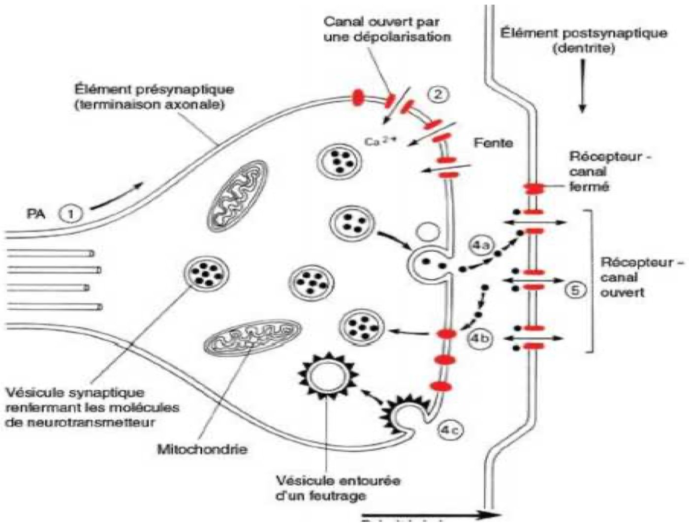
IV. Properties of chemical synapses p. 16 2022-23 · 2023-24 · 2024-25 · 2025-26
| Property | Meaning |
|---|---|
| Unidirectional | The impulse passes only from the presynaptic to the postsynaptic element. |
| Fatigue | Repeated stimulation → progressive decrease of the postsynaptic response, by exhaustion of the neurotransmitter stock. |
| Synaptic delay | Time needed to release the neurotransmitter into the cleft and for it to act on the postsynaptic receptor. |
| Integrative role | A neuron in contact with several neurons acts as an integrator; the information can be modified. |
| Not all-or-nothing | Does not obey the all-or-nothing law. |
Memory trick U-F-D-I-N: Unidirectional, Fatigue, Delay, Integration,
Not all-or-nothing.
V. Neurotransmitters p. 17–18
Neurotransmitter (neuromediator)
A chemical substance released by a neuron at a synapse.
5 criteria to identify a neurotransmitter
- Synthesized by the neuron.
- Present in the presynaptic terminal.
- Released in sufficient quantity to act on the postsynaptic neuron.
- Applied directly to the target neuron, it reproduces the effect of the endogenous neurotransmitter.
- Specifically inactivated.
2 large groups
| Group | Members |
|---|---|
| Classic | Acetylcholine |
| Monoamines: noradrenaline, adrenaline, dopamine, serotonin, histamine | |
| Amino acids: glutamate, aspartate, GABA, glycine | |
| Others | Above all the peptides; also nitric oxide (NO), ATP, adenosine |
VI. The neuromuscular junction (NMJ, motor endplate) p. 19–22 2022-23 · 2023-24
Definition
The contact zone between the nerve ending (axon of the α motor neuron) and the striated skeletal muscle fiber it
innervates = the motor endplate.
- At the muscle, the axon divides into branches, each innervating a single muscle fiber.
- The terminal branches sink into a groove dug into the surface of the muscle membrane.
| Part | Content |
|---|---|
| Presynaptic element | Synaptic vesicles containing the neurotransmitter (ACh) |
| Synaptic cleft | 50 to 100 nm wide |
| Postsynaptic element | Muscle membrane with nicotinic ACh receptors at the crests of the folds |
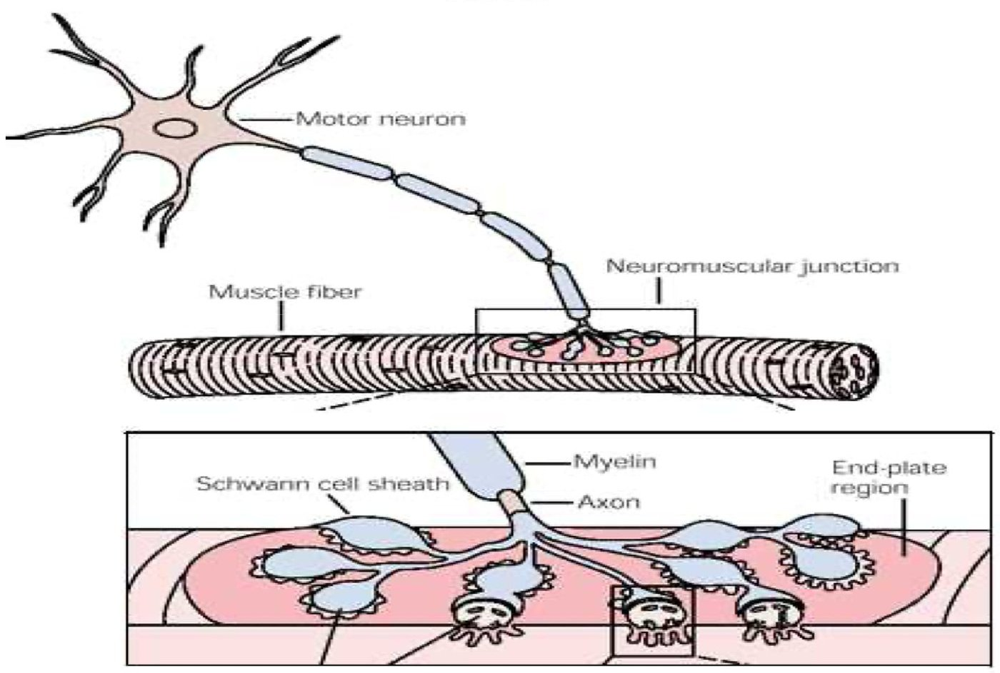
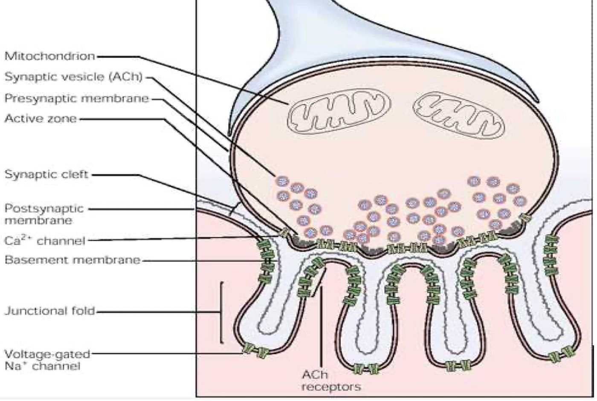
VI.3 Electrophysiology of the NMJ p. 23–29 2022-23 · 2024-25
a) Endplate potential (EPP, PPM)
- Normally, stimulating the motor nerve always triggers an action potential that propagates along the muscle membrane.
- After curarization or blocking by TTX (tetrodotoxin), a local depolarization can be isolated: the EPP.
- The EPP is local: maximum in 2 ms, then decreases exponentially to zero in 20 ms.
b) Ionic mechanism (voltage clamp)
- During the EPP: membrane resistance falls, permeabilities rise, ions pass.
- The EPP is due to a simultaneous increase of the conductances to Na⁺ and K⁺.
- Each ion tends toward its own equilibrium potential (Eion) → the result is an intermediate value, about −15 mV.
- The patch clamp technique measures conductances and ionic current at the scale of a single channel.
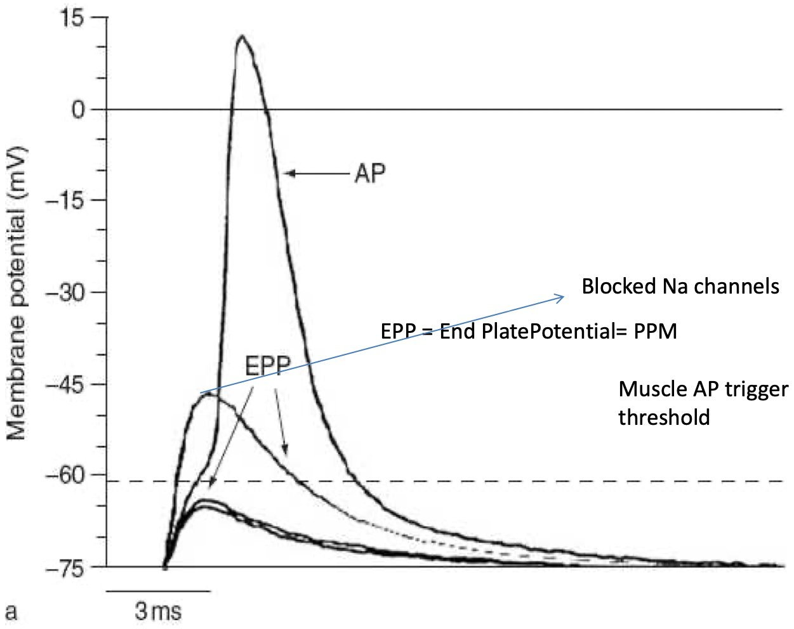
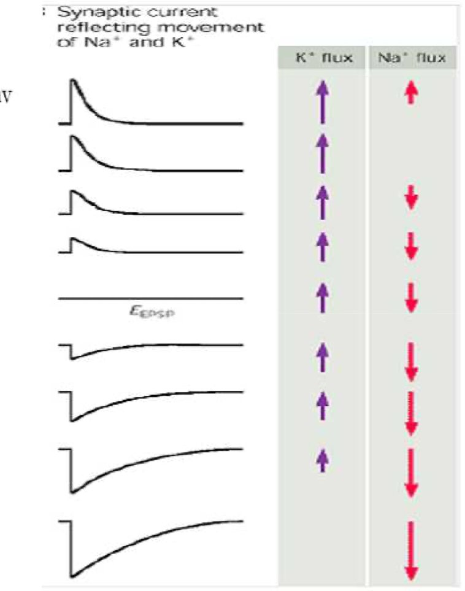
c) Miniature endplate potential (MEPP)
Recorded without any stimulation: small potentials of 0.5 mV, spontaneous and random — thought to result from the release of small packets of ACh called quanta.
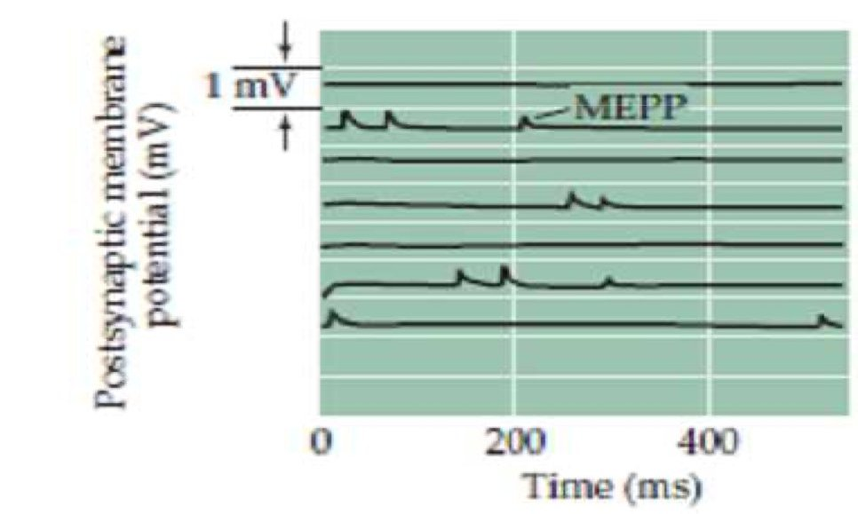
VI.4 Biochemistry: acetylcholine p. 30–39 2022-23 · 2023-24 · 2024-25
a) Metabolism of ACh
- Synthesis — in the cytosol of the presynaptic ending, from acetyl-coenzyme A (from glucose metabolism in the mitochondria) + choline, catalysed by choline acetyltransferase (CAT).
- Storage — concentrated in synaptic vesicles, in 2 pools: a reserve pool and a pool near the plasma membrane in the active zones, ready for exocytosis.
- Exocytosis — controlled by Ca²⁺: the AP opens voltage-gated Ca²⁺ channels very fast; Ca²⁺ entry triggers fusion and exocytosis.
- Degradation — after acting, ACh is quickly split by acetylcholinesterase into choline + acetic acid; choline is recaptured by the presynaptic terminal through active transporters.
Molecular mechanism of exocytosis
↑ Ca²⁺ in the terminal→activates synaptotagmin (vesicle protein)→with the SNARE complex→docking→vesicle–plasma membrane fusion→ACh released
| SNARE protein | Membrane |
|---|---|
| Synaptobrevin (VAMP) | Vesicle |
| SNAP-25 | Plasma membrane |
| Syntaxin | Plasma membrane |
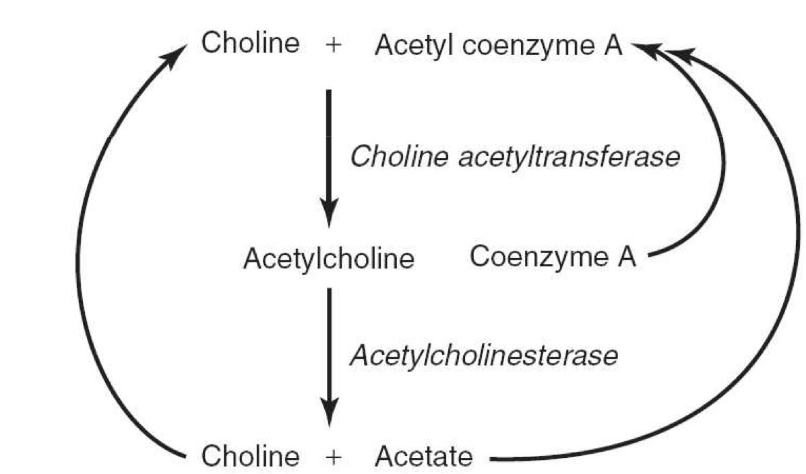
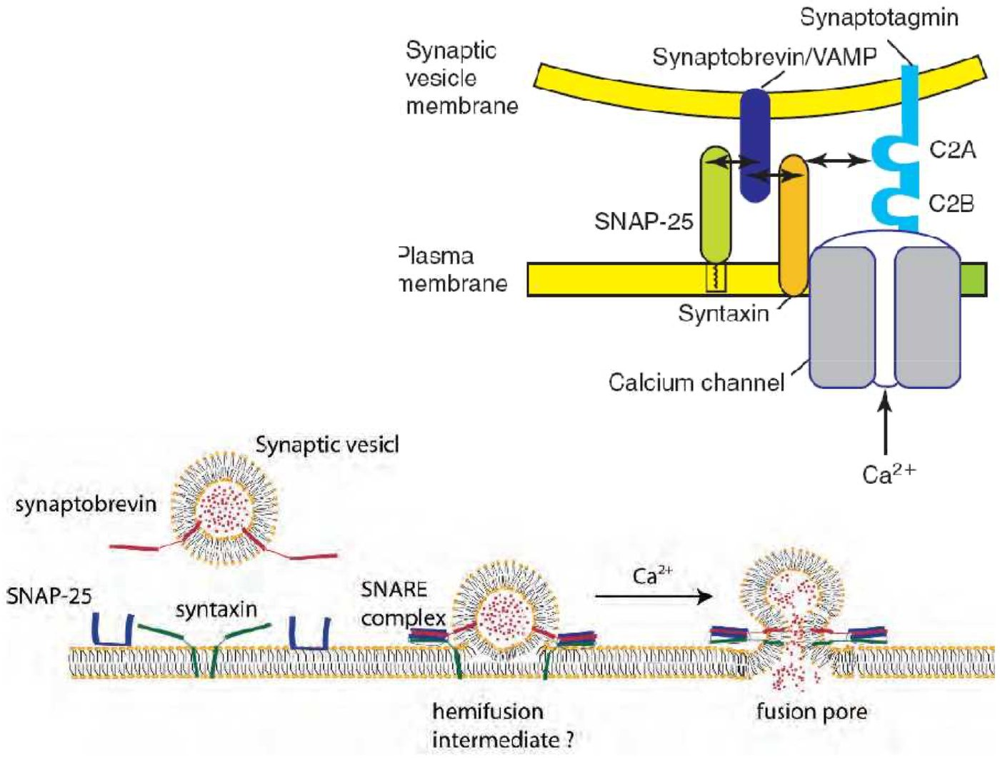
b) The nicotinic ACh receptor p. 37–39
- A glycoprotein of 5 subunits: 2 α, 1 β, 1 γ, 1 δ, forming the walls of a central pore; each subunit has 4 transmembrane domains (TM1–TM4).
- Binding of 2 ACh molecules → conformation change (closed → open) → simultaneous, rapid, transient ↑ permeability to cations (Na⁺ and K⁺).
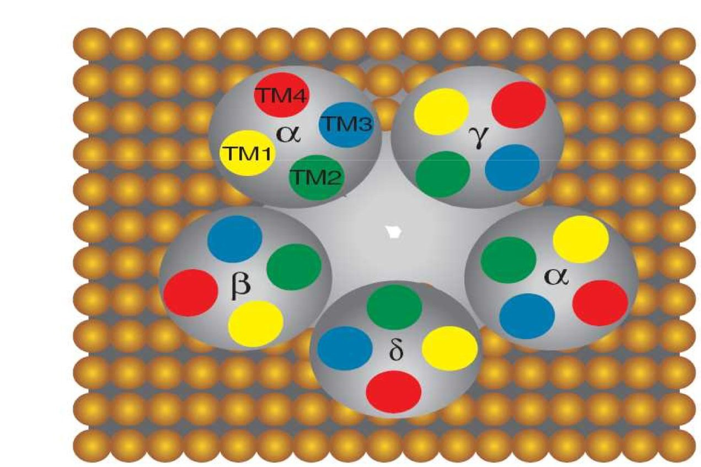
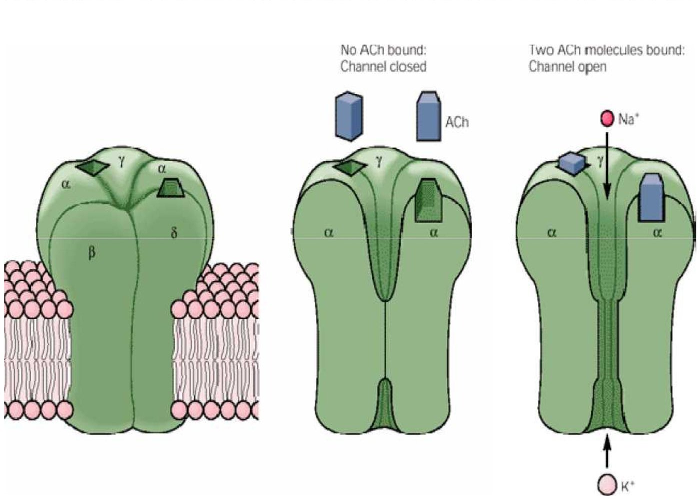
VI.6 Pharmacology of the NMJ p. 40–41 2022-23 · 2023-24
Neuromuscular transmission can be blocked in 3 ways:
| Level | Mechanism | Agents |
|---|---|---|
| 1. Synthesis | Inhibit ACh synthesis | Hemicholinium, vesamicol |
| 2. Release | Calcium-entry inhibitors | Mg²⁺, aminoglycoside antibiotics (streptomycin, neomycin), calcium channel blockers |
| Neurotoxins | Botulinum toxin, β-bungarotoxin | |
| 3. Postsynaptic | Non-depolarizing blockers = competitive antagonists of ACh — reversible | Curare |
| Non-depolarizing — irreversible competitive antagonist | α-bungarotoxin | |
| Depolarizing blockers = ACh agonists | Decamethonium, suxamethonium |
Memory trick
β-bungarotoxin acts before the cleft (release); α-bungarotoxin acts after it (receptor, irreversible).
7. Clinical application p. 42
Postsynaptic disorders
- Myasthenia gravis: autoimmune, antibodies against ACh receptors
- Congenital myasthenic syndromes
- Toxic postsynaptic damage
Presynaptic disorders
- Lambert-Eaton syndrome: autoimmune, antibodies against calcium channels
- Botulism: the toxin blocks ACh release
VII. Neuro-neuronal synapses p. 43–49 2022-23 · 2023-24 · 2024-25
Contact zone between 2 neurons. The neurotransmitter can depolarize (EPSP) or hyperpolarize (IPSP) the postsynaptic neuron.
| EPSP (PPSE) — excitatory | IPSP (PPSI) — inhibitory | |
|---|---|---|
| What | Local depolarization of the postsynaptic membrane | Hyperpolarization of the postsynaptic membrane — the mirror image of the EPSP |
| Cause | Excitatory neurotransmitter on specific receptors | Inhibitory neurotransmitter on specific receptors (e.g. GABA in the figure) |
| Ions | Simultaneous ↑ gNa⁺ and gK⁺ | Cl⁻ entering and/or K⁺ leaving the cell |
| Time course | Sets up quickly, disappears gradually | — |
Characteristics of postsynaptic potentials
Summable · gradable (amplitude depends on the amount of neurotransmitter released) · decremental (amplitude falls with
distance) · not all-or-nothing · no refractory period.
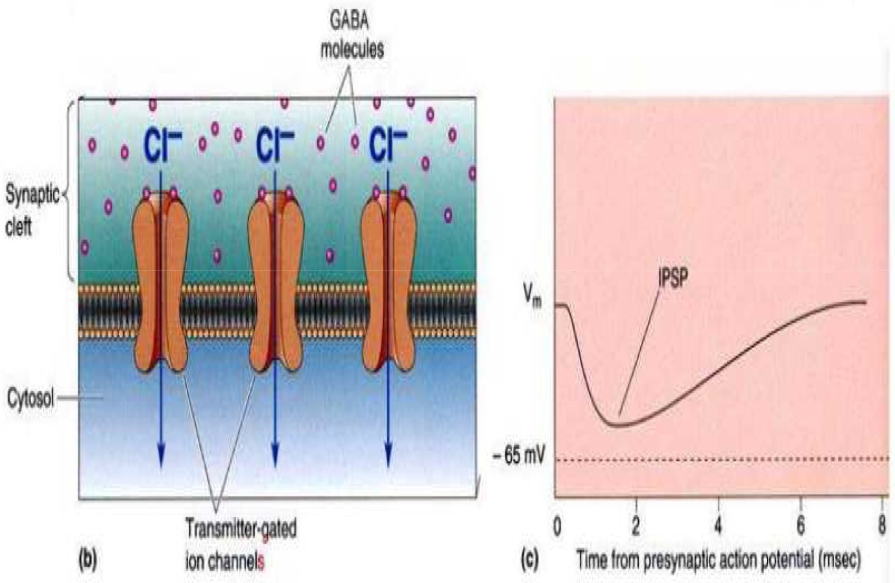
VII.2 Synaptic integration p. 50–54
- The initial segment (trigger zone) is where the neuron's action potential is born.
- There, membrane excitability is maximal (abundant voltage-dependent Na⁺ channels).
- When the sum of EPSPs exceeds the threshold at the initial segment, an AP is fired.
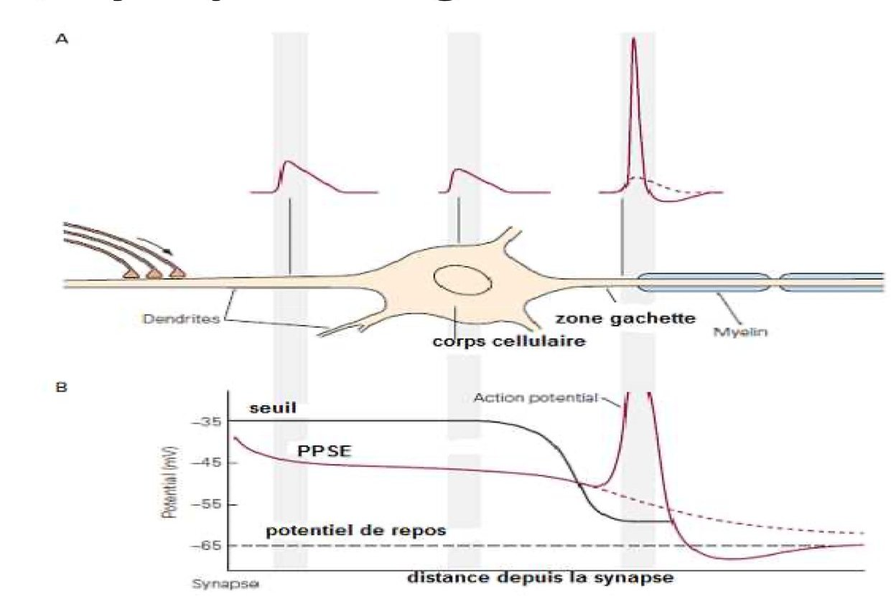
Spatial vs temporal summation
| Spatial summation | Temporal summation | |
|---|---|---|
| As drawn in the PDF figures | Several presynaptic neurons stimulate the same postsynaptic neuron at the same time | One presynaptic neuron fires repeatedly in a short time |
| Result | The EPSPs add up; if the sum reaches threshold → an AP | |
The PDF text swaps these two definitions
The slide text says "spatial: the same presynaptic neuron stimulates repeatedly…" and "temporal: several neurons stimulate the same
neuron…". Its own figures show the opposite: "Sommation spatiale" = 3 different axons firing together (p. 52); "Sommation
temporelle" = one axon firing 3 times in a row, the EPSPs climbing step by step (p. 53). The table above follows the figures —
check with your teacher which version they expect.
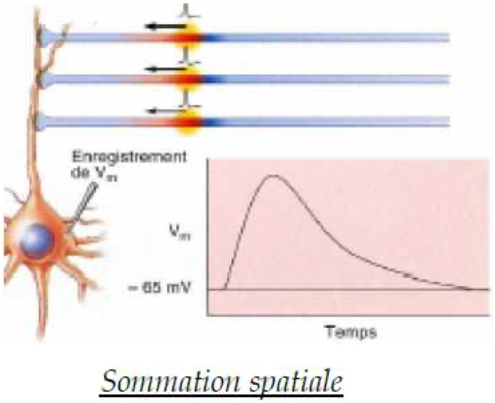
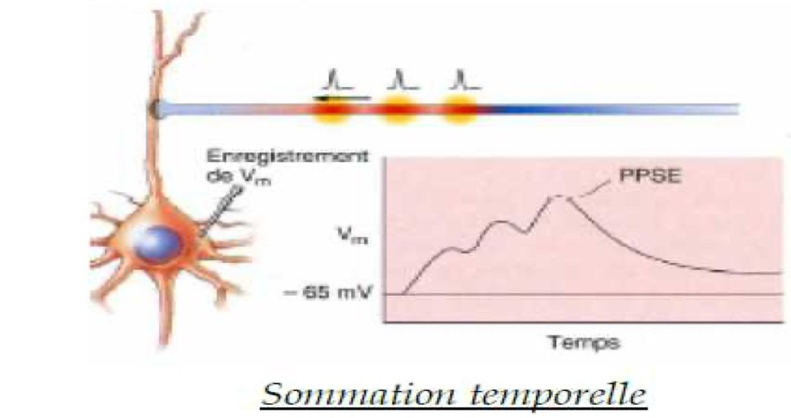
3. Presynaptic inhibition p. 54
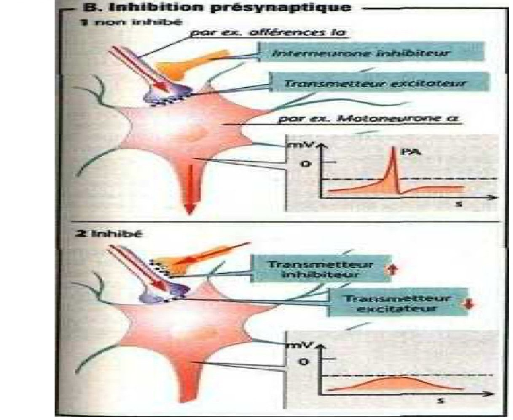
Exam traps
False statements that keep coming back
- "At a chemical synapse the neurotransmitter crosses through gap junctions" / "pre- and postsynaptic membranes are continuous" — false: those describe the electrical synapse; a chemical synapse has a cleft. 3 years
- "Neurotransmitters are eliminated by reuptake by postsynaptic elements" — false: degradation, diffusion and presynaptic reuptake. 3 years
- Postsynaptic potentials are "all-or-none", "propagated, always hyperpolarizing" or "reflect presynaptic conductance changes" — false: gradable and summable, local, either sign, postsynaptic. 3 years
- "Sodium entry into the presynaptic terminal causes release" — false: calcium. 2 years
- "The EPP is a presynaptic phenomenon / an electrotonic depolarization of the presynaptic membrane / a hyperpolarization" — false: local depolarization of the postsynaptic membrane. 2 years
- "The EPP is due to muscarinic receptors" — false: nicotinic.
- "The duration of action of ACh is not limited" — false: acetylcholinesterase degrades it quickly. True in the same question: release triggered by the motor neuron AP; EPP local and gradable by spatial and temporal summation; blocked by curare. 2 years
- Which substance blocks Na⁺ channels? TTX (tetrodotoxin) — not curare (nicotinic receptor antagonist) or GABA.
- In an electrical synapse the signal is carried by ionic current, not ACh or glycine.
- "Chemical transmission is faster than electrical" / "occurs only between neurons" — false per the key (it has a synaptic delay; neuro-effector synapses exist).
Self-check
Give the 4 criteria used to classify synapses.
Operating mode (chemical / electrical), postsynaptic element (neuro-neuronal / neuro-effector), effect on the postsynaptic membrane
(excitatory / inhibitory), chemical mediator (cholinergic, glutamatergic, GABAergic, dopaminergic, peptidergic).
Chemical vs electrical synapse: signal and direction?
Chemical: neurotransmitter on postsynaptic receptors, one-way. Electrical: direct passage of potential changes (ionic current), bidirectional.
List the 5 steps of chemical transmission.
AP arrives → Ca²⁺ entry; Ca²⁺ triggers exocytosis; release into the cleft; binding to a specific receptor; rapid inactivation
(degradation, reuptake, diffusion).
Name the 5 properties of chemical synapses.
Unidirectional, fatigue, synaptic delay, integrative role, not all-or-nothing.
What 5 criteria make a molecule a neurotransmitter?
Synthesized by the neuron; present in the presynaptic terminal; released in sufficient quantity; reproduces the endogenous effect when
applied; specifically inactivated.
Width of the NMJ cleft, and where are the nicotinic receptors?
50–100 nm; on the crests of the junctional folds of the muscle membrane.
How is the EPP isolated, and what is its time course?
By curare or TTX; max in 2 ms, exponential decay to 0 in 20 ms.
Why is the EPP's reversal around −15 mV?
Na⁺ and K⁺ conductances increase together; each ion pulls toward its own equilibrium potential, giving an intermediate value.
What is a MEPP?
A spontaneous, random 0.5 mV potential at rest, due to release of one quantum of ACh.
Synthesis and degradation of ACh: substrates and enzymes?
Acetyl-CoA + choline → ACh by choline acetyltransferase (cytosol). ACh → choline + acetic acid by acetylcholinesterase; choline recaptured.
Which proteins drive vesicle fusion, and where is each?
Synaptotagmin (vesicle, Ca²⁺ sensor) with the SNAREs: synaptobrevin (vesicle), SNAP-25 and syntaxin (plasma membrane).
Composition of the nicotinic receptor and how it opens?
5 subunits (2α, β, γ, δ), each with 4 transmembrane domains; 2 ACh → closed-to-open conformation → Na⁺ and K⁺ permeability ↑.
Classify: curare, α-bungarotoxin, suxamethonium, vesamicol, botulinum toxin.
Curare: reversible competitive antagonist. α-bungarotoxin: irreversible competitive antagonist. Suxamethonium: depolarizing blocker
(agonist). Vesamicol: inhibits synthesis (per the course). Botulinum toxin: blocks release.
Myasthenia gravis vs Lambert-Eaton?
Myasthenia: postsynaptic, antibodies against ACh receptors. Lambert-Eaton: presynaptic, antibodies against calcium channels.
Ionic basis of the EPSP and the IPSP?
EPSP: simultaneous ↑ gNa⁺ and gK⁺. IPSP: Cl⁻ entry and/or K⁺ exit.
Where is the AP born in a neuron, and why there?
At the initial segment (trigger zone): maximal excitability thanks to abundant voltage-dependent Na⁺ channels.